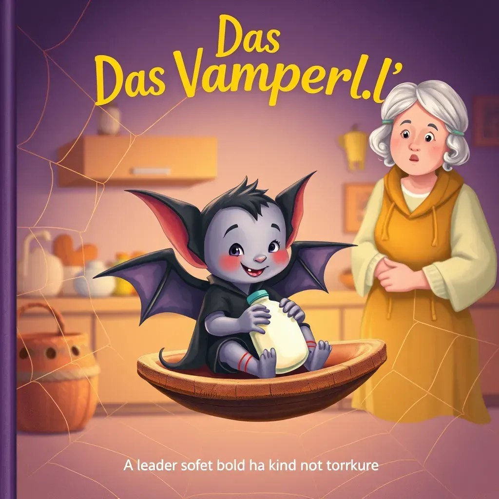
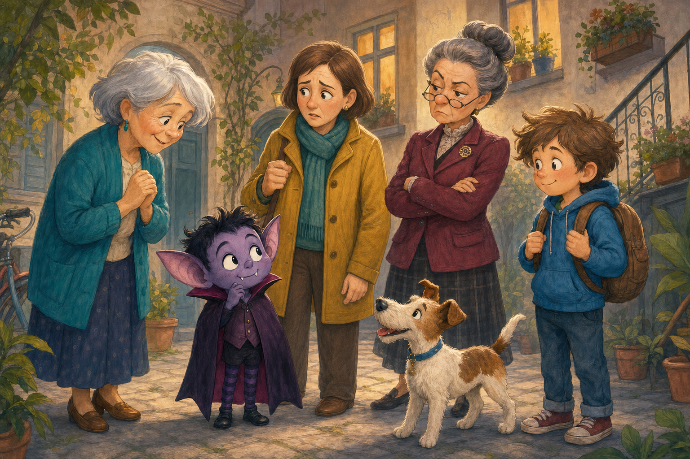
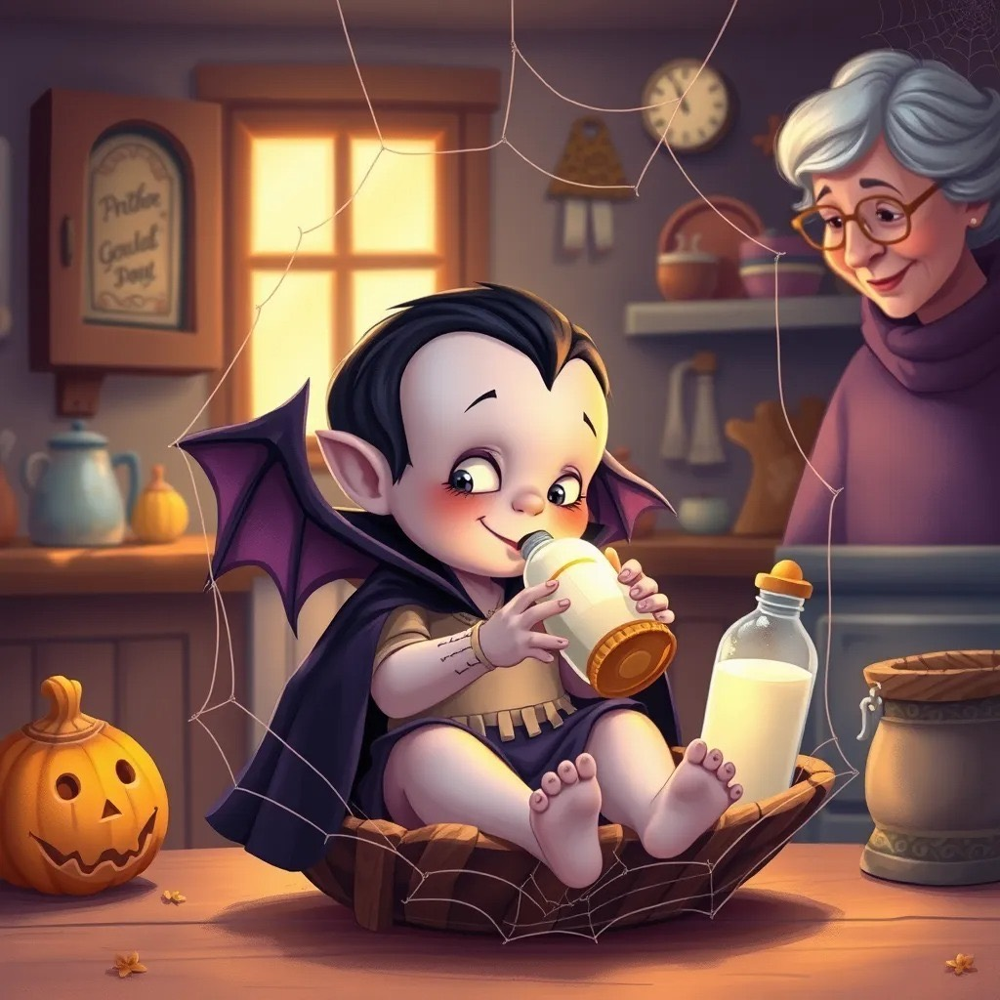

Kapitel 1–3
0%Erfolg
Aufgaben: 0 % (0/0)
Richtig: noch nicht bearbeitet
⭐ 0 Lernsterne
Überblick
Dieses digitale Lernpaket begleitet dich durch alle 11 Kapitel von Renate Welschs "Das Vamperl".
Jedes Kapitel enthält interaktive Übungen: Quiz, Lückentexte, Zuordnungen, Schreibaufgaben, Kreuzworträtsel & mehr!


Sieh dir deine Ergebnisse übersichtlich in Lernkreisen an.
S. 8–19 Frau Lizzi kommt von der Kur zurück. Beim Putzen der Wohnung singt sie ein Vampir-Lied. An der Decke entdeckt sie ein Spinnennetz – und darin einen winzigen, schlafenden Vampir! Nachbarin Frau Anna mit Foxterrier Flocki will den Vampir ins Klo werfen. Doch Frau Lizzi beschützt ihn und zieht ihn mit einer Puppenflasche und warmer Milch mit Zucker auf.

Beschreibe Frau Lizzi. Fülle aus:
Alter:
Wohnsituation:
Hobbys:
Charakter (3 Adjektive):
Wie reagieren Frau Lizzi und Frau Anna auf das Vamperl? Ordne die Adjektive zu (Drag & Drop):
1️⃣ Frau Lizzi findet das Vamperl im Kühlschrank.
2️⃣ Frau Anna will das Vamperl ins Klo werfen.
3️⃣ Das Vamperl bekommt warme Milch mit Zucker.
⭐ 0/3
S. 20–27 Frau Lizzi will Kaffee trinken – da klopfen Frau Anna und Frau Maringer. Sie verlangen Auskunft über den Vampir. Frau Lizzi lügt: "Nein" (in den Müll geworfen hat sie ihn ja nicht!). Die beiden Nachbarinnen streiten sich heftig über ihre Hunde Flocki und Bello. Endlich gehen sie. Das Vamperl fiept und bekommt die Flasche.
"Wenn es um das Tier geht, können Sie ganz beruhigt sein." (Frau Lizzi, S.20)
Was meint Frau Lizzi eigentlich?
"Die Leute haben keinen Sinn für eine Vampirschönheit." (Frau Lizzi, S.25)
Was bedeutet das?
S. 28–38 Das Vamperl wächst rasant: Schmuckschachtel → Knopfschachtel → Nähkorb. Es lernt fliegen (1. Versuch: Bauchlandung). Im Treppenhaus hört Frau Lizzi Frau Müller auf Hannes schimpfen. Das Vamperl fliegt los und sticht ihr in die Galle – plötzlich ist sie freundlich! Frau Lizzi nennt es "Vamperl".
Wo schläft das Vamperl in welcher Woche?
1. Woche: (Tipp: Schmuckschachtel)
2. Woche: (Tipp: Knopfschachtel)
3. Woche: (Tipp: Nähkorb)
1️⃣ Das Vamperl schläft zuerst in einer Zigarrenkiste.
2️⃣ Das Vamperl sticht Frau Müller in die Galle.
3️⃣ Frau Müller wird danach noch wütender.
⭐ 0/3
Was passiert, nachdem Frau Müller auf einmal freundlich ist?
"Mein Vamperl trinkt nur und mag kein und macht die bösen Leute alle wieder ."
S. 39–44 Im Park wird Dieter von Kindern gehänselt: "Ri-ra-rum, der Dieter, der ist dumm!" Das Vamperl sticht sie in die Galle – alle werden nett. Karin lädt Dieter zu Käsenudeln ein. Frau Lizzi schimpft mit Vamperl. Es weint eine Träne.
Sortiere die Ereignisse in die richtige Reihenfolge:
"Ri-ra-, der Dieter, der ist ."
S. 45–55 Vamperl reißt bei Hupkonzert aus. Es sticht Autofahrer in die Galle – alle werden höflich ("Nach Ihnen!"). Zeitungsverkäufer Herr Kühne sieht es und alarmiert die Polizei. Polizist Wipfel kommt. Frau Lizzi versteckt Vamperl.
"Morgens schon in aller Frühe wird mein Vamperl munter. Flitzt wie ein geölter Blitz auf die Straße runter. Wo die Leute schimpfen, streiten wegen lauter Kleinigkeiten, wo sie raufen, fluchen, schrein, dort mischt sich mein Vamperl ein."
1️⃣ Wie viele Verse hat das Gedicht?
2️⃣ Was reimt sich? Frühe – , schrein –
3️⃣ Welches Wort reimt sich auf "Blitz"?
Schreibe ein kleines Gedicht über ein Fantasietier.
Tipp: "Mein (Tier) trinkt nur... und mag kein... und macht..."
1️⃣ Vamperl hilft Autofahrern, freundlich zu sein.
2️⃣ Herr Kühne ist Polizist.
3️⃣ Herr Kühne ist Zeitungsverkäufer.
⭐ 0/3
S. 56–61 Frau Lizzi hält Vamperl zuhause. Es ist gelangweilt. Sie kocht Kamillentee. Vamperl mag ihn nicht. Es spielt mit Wollknäueln, sitzt am Fenster und will raus. Frau Lizzi singt ihm Lieder vor und näht ihm ein Kissen.
1️⃣ Frau Lizzi hält Vamperl streng im Haus.
2️⃣ Vamperl liebt Kamillentee.
3️⃣ Frau Lizzi näht Vamperl ein Kissen.
⭐ 0/3
Schreibe einen Tagebucheintrag aus Vamperls Sicht:
S. 62–66 Hannes & Freunde spielen Fußball im Hof. Der Hausmeister verbietet es. Da kommt Vamperl und sticht ihn in die Galle – plötzlich erlaubt er alles: Radfahren, Ballspielen! Die Kinder staunen.
Was verbietet der Hausmeister?
S. 67–77 Vamperl fliegt jede Nacht aus, um allen zu helfen. Es saugt und saugt – wird immer dicker. Eines Morgens ist es krank: ganz grau und schlapp. Es hat zu viel Gift aufgesogen!
S. 78–91 Frau Lizzi pflegt das kranke Vamperl mit Honig und guten Worten. Im Bus sticht es noch einen Fahrgast, dann wird es ohnmächtig. Der Arzt ist ratlos. Soll sie es ins Krankenhaus bringen?
Frau Lizzi pflegt das Vamperl mit . Im Bus sticht es einen Fahrgast und wird dann . Sie muss eine schwere treffen.
Soll Frau Lizzi das Vamperl ins Krankenhaus bringen?
✅ JA, weil...
❌ NEIN, weil...
S. 92–103 Im Krankenhaus setzt der Professor Vamperl unter eine Glasglocke. Es wird immer schwächer – keine bösen Wörter zum Saugen, nur sterile Luft. Frau Lizzi wacht Tag und Nacht, füttert es mit guten Gedanken.
① Der Professor setzt Vamperl unter Glas, weil...
② Vamperl wird nicht gesund, weil...
③ Frau Lizzi hilft ihm, indem sie...
Die Redewendung "Gift und Galle spucken" bedeutet:
Was macht das Vamperl mit der Galle? Es saugt das heraus.
S. 104–111 Frau Lizzi holt Vamperl aus dem Krankenhaus. Mit lieben Worten pflegt sie es gesund. Der Professor gibt auf. Der Hausmeister ist freundlich. Frau Lizzis Schlusssatz: "Ein Vamperl ist nicht genug. Solche wie dich brauchen wir viele!"
"Frau Lizzi holt das Vamperl aus dem Supermarkt. Sie pflegt es mit bösen Wörtern. Der Professor jubelt."
Finde die 3 Fehler und schreibe den Satz richtig:
Was könnte am nächsten Tag passieren?
"Ein Vamperl ist nicht genug. Solche wie dich brauchen wir viele."
Was will sie damit sagen?
🧛⭐🦇
Teste dein Wissen zum ganzen Buch!
🧛📚⭐
Du kennst dich jetzt richtig gut aus mit dem Vamperl!
Tipp: Gestalte ein eigenes Deckblatt für dein Lesebegleitheft!
Der äußere grüne Ring zeigt deine Erfolgsquote. Der innere orange Ring zeigt, wie viele Aufgaben du bereits bearbeitet hast.
Aufgaben: 0 % (0/0)
Richtig: noch nicht bearbeitet
⭐ 0 Lernsterne
Aufgaben: 0 % (0/0)
Richtig: noch nicht bearbeitet
⭐ 0 Lernsterne
Aufgaben: 0 % (0/0)
Richtig: noch nicht bearbeitet
⭐ 0 Lernsterne
Aufgaben: 0 % (0/0)
Richtig: noch nicht bearbeitet
⭐ 0 Lernsterne
Gesamtfortschritt: 0 %